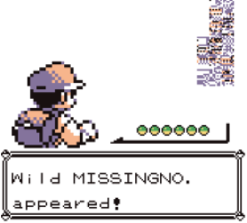

My Favorite Glitches
This page will eventually have tons of descriptions of different glitches
and links to pages about them, but due to time constraints, I can't include
all of that right now. Instead, I'll just describe a glitch from the Pokémon
series.
The Old Man Glitch
This is one of the most famous video game glitches of all time. In Pokémon
Red and Blue, it's possible to encounter a nonexistent Pokémon called
Missingno through the use of a glitch involving a non-playable character known
as the Old Man.
Shortly after the beginning of the game, you're given the option to talk to the Old Man.
He will give you a short tutorial on how to catch a Pokémon. During this tutorial,
all of the game's controls are disabled and a cutscene plays.
If you progress far enough through the game to reach Cinnabar Island, go back and
talk to the Old Man, fly back into Cinnabar, and walk along the coast, you have a
high chance of encountering Missingno.
The reason this happens is because the programmers of Pokémon Red and Blue
forgot to include data for what Pokémon can be encountered on the shoreline.
The game compensates for this by reading from whatever Pokémon data was last
stored in that area of memory. Throughout the normal course of gameplay, this
would just end up being Pokémon data from whatever area you just walked through.
There's another component, however: when the Old Man demonstrates how to catch
a Pokémon, the game needs to write over your name data so that it will show that
the Old Man caught a Pokémon instead of you. For the purposes of the
cutscene, it temporarily stores your name in a part of memory where wild Pokémon
data is normally stored, because once you walk into another part of the world,
the data will just be overwritten and everything will be fine. Once the cutscene
ends, you get your name back, but that same name data is still where wild Pokémon
data should be.
By flying directly into Cinnabar from the town where the Old Man is located, you
don't give the game a chance to overwrite that wild Pokémon data, so when you walk
along the coast, the Pokémon you encounter are determined by the characters in your
name. Since several possible letters in a player's name point to unused data,
the game is forced to use an error handler (Missingno) to make sure it doesn't crash.

An encounter with Missingno.